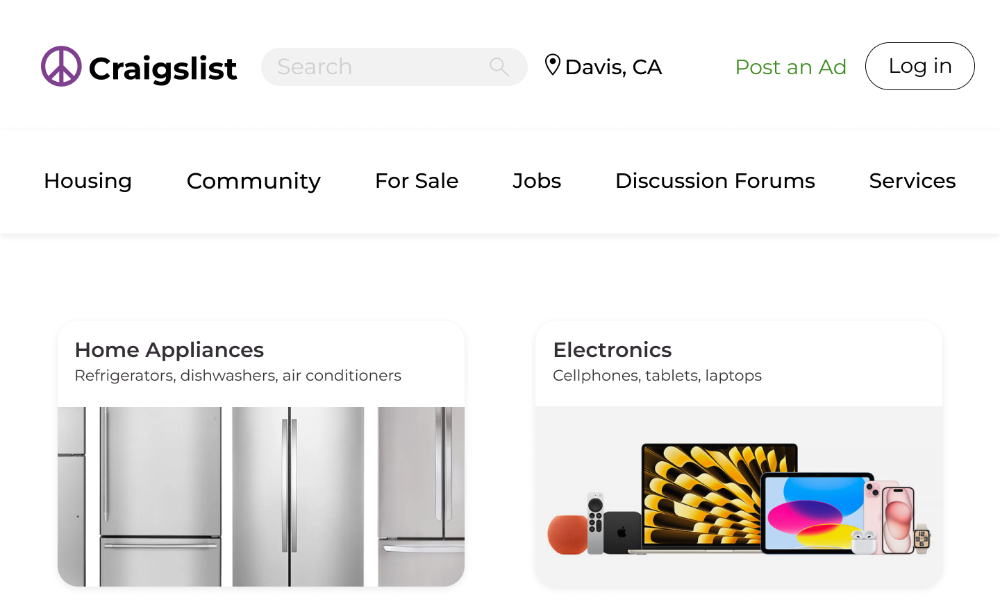
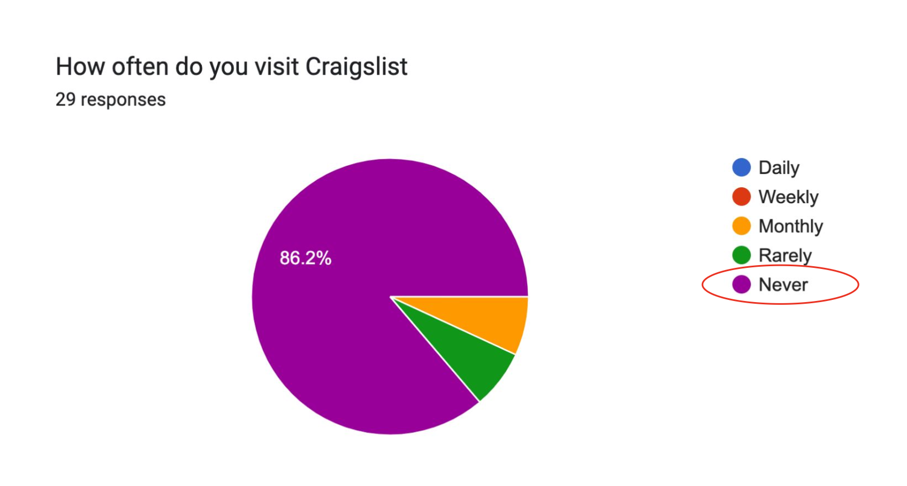
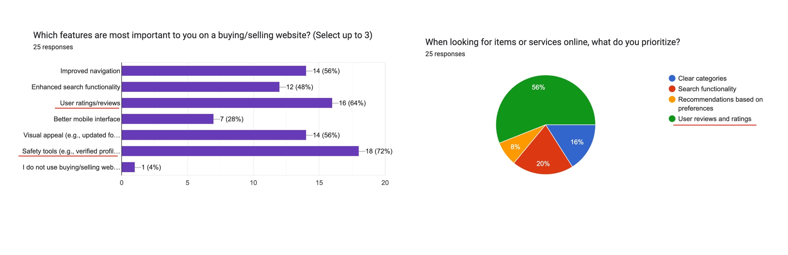
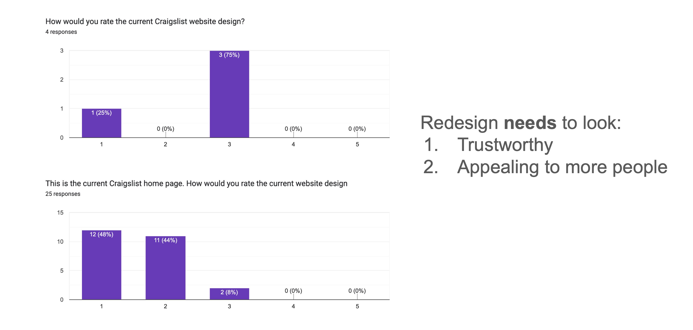
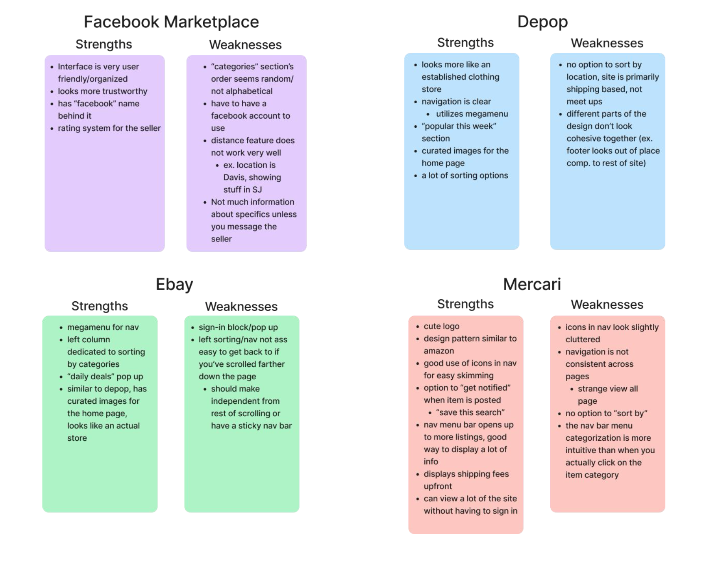
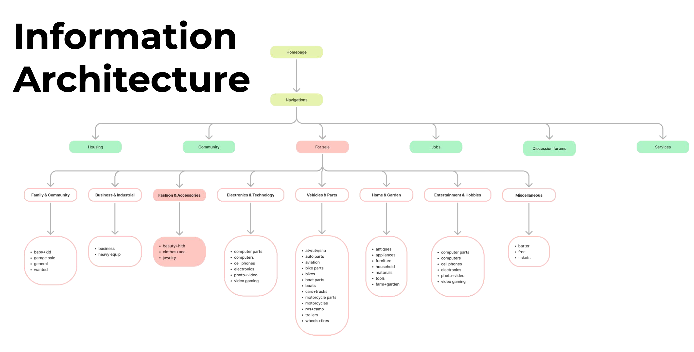
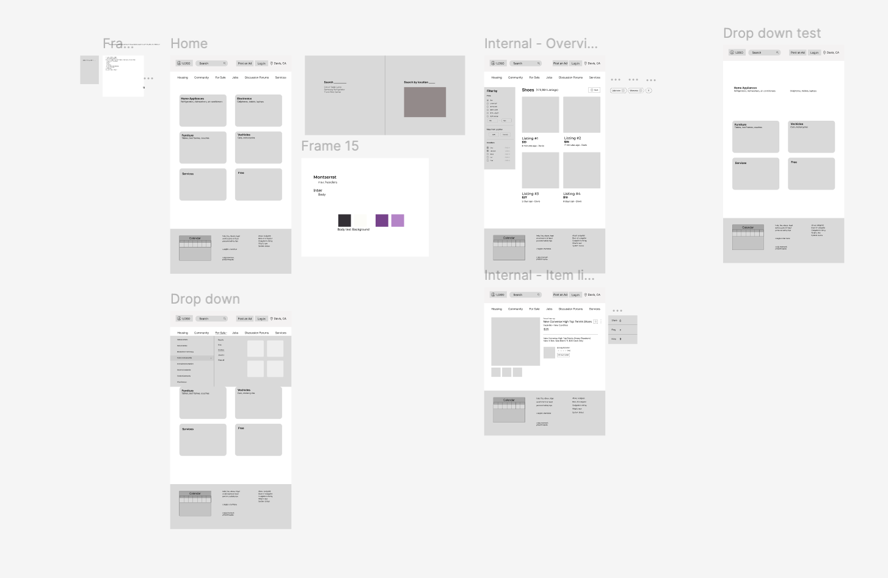
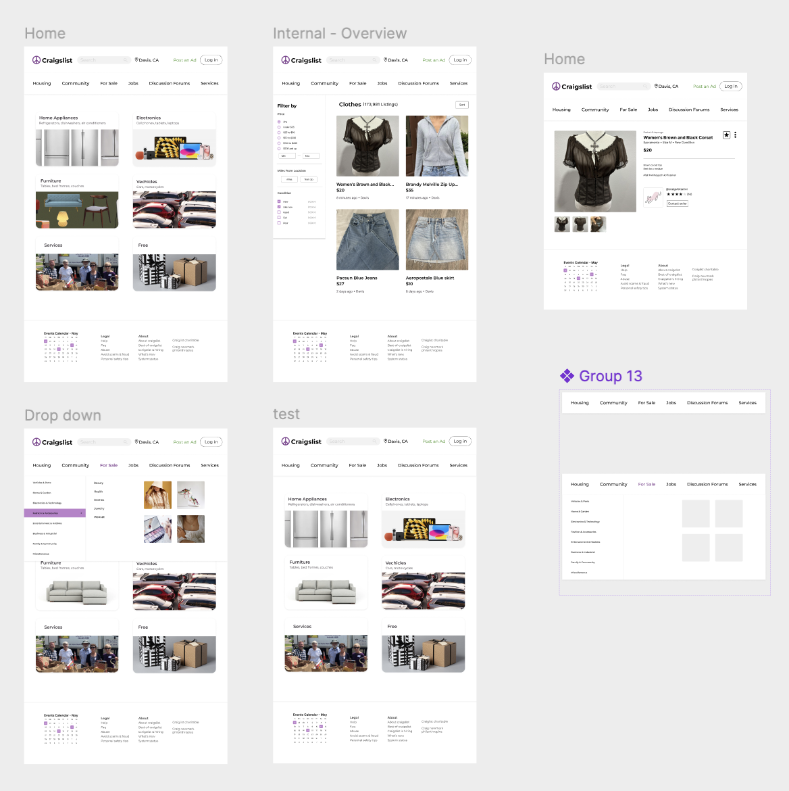
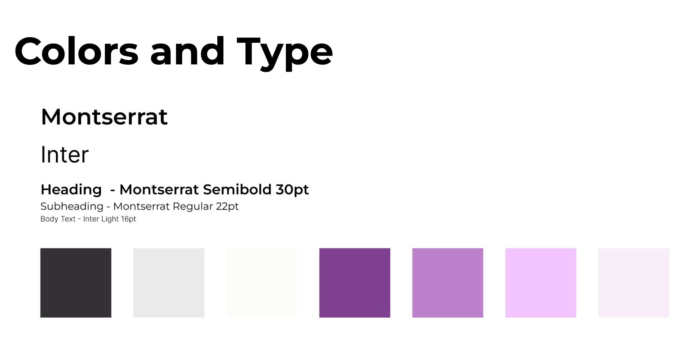

Craigslist Re-Design
This project involved redesigning Craigslist with a modern feel that focuses on user interface, focusing on enhancing accessibility, visual clarity, and intuitive navigation — all while keeping the platform more welcoming, usable, and relevant for today's diverse digital audience.

Context
How might we modernize the Craigslist website to improve user experience and functionality while maintaining its core simplicity and familiarity, addressing key challenges such as cluttered navigation and small, lacking features in order to meet the evolving needs of users in 2024 and beyond?
Research Goals
To gain comprehensive insights into user behavior, preferences, and pain points with the current Craigslist website as well as to identify opportunities for improvement that align with modern web design standards while preserving the platform's core simplicity and functionality.
User Surveys



Competitive Analysis
Based on user surveys, the most popular buying/selling apps among Craigslist usage aged (below) are:
- Nextdoor
- Facebook Marketplace
- eBay
- Mercari

User Persona

Information Architecture

Low-Fidelity

Final Design

Colors and Type

Takeaways & Next Steps
Throughout this redesign project, I gained valuable experience in both design thinking and practical execution. I learned how to work efficiently within Figma, including components, constraints, and auto-layout for responsive designs. Key takeaways include:
- Discovered the importance of scaling user-targeted approaches to my own research to uncover real user goals and pain points and preferences.
- Gained a deeper understanding of how elements (text, buttons, icons) impact the overall UI and creating better visuals for platforms like Craigslist, and identified ways to offer better user experiences.
- Explored features that influenced tools, such as user verification badges, dark/light messaging UI, or internal redesigns.
- Continuing conducting usability tests to refine these interactions, typography, and navigation systems.
- Eventually, consider solutions that approach to modern Craigslist for a mobile app, content system to inform.
With the current redesign exposure successfully used to Craigslist, there are several directions for further development.